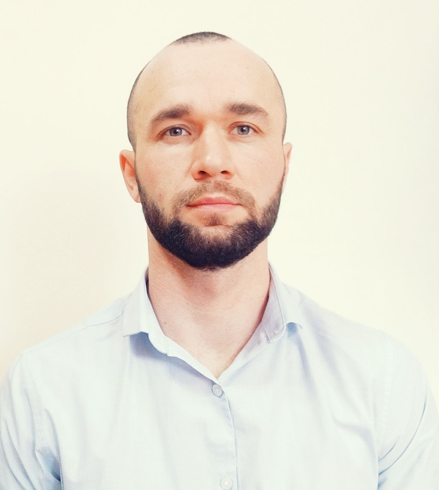

Bildmind — AI-платформа для вивчення мов і соціальної інтеграції. Вона включає GPT-помічника, словникову базу, інтервальне повторення та EdTech-функції.
| Рік | Посада | Організація |
|---|---|---|
| 2022–2023 | Волонтер | Допомога ЗСУ |
| 2021 | Головний спеціаліст | Гайворонська міськрада |
| 2020 | Кандидат у депутати | «За Майбутнє» |
| Заклад | Спеціальність | Роки |
|---|---|---|
| КНТЕУ | Менеджмент | 2005–2009 |
| ВКЕБ | Фінанси | 2002–2005 |
Створити інноваційне освітнє середовище, що поєднує ШІ, мотивацію та соціальний вплив.